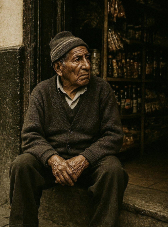
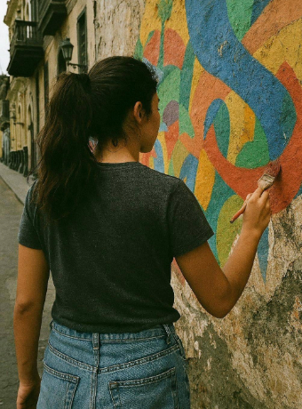
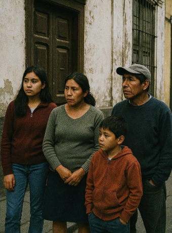
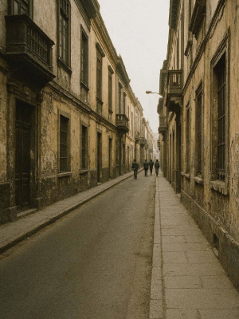
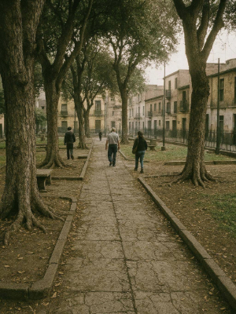
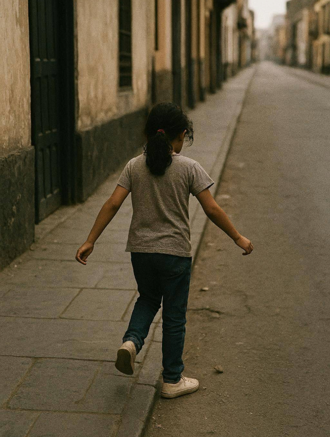

La Memoria de una Ciudad
Valeria Salazar tiene veintidós años y cursa el último ciclo de Comunicación Audiovisual. Busca un tema para su tesis documental. Su profesor le sugiere observar las historias que ya forman parte de su rutina. Esa tarde vuelve a caminar por el Centro de Lima, como hacía de niña con su abuela. Debajo de una banca del Parque Universitario encuentra una cámara de 35 milímetros, cubierta de hojas secas y polvo, con una inscripción grabada a mano: La Memoria de una Ciudad.
La última pista
La lleva al módulo de seguridad del parque: nadie ha reportado su pérdida. En casa intenta rastrear el número de serie y un teléfono escrito a mano en una etiqueta borrosa; la llamada solo devuelve una grabación que dice que ese número ya no existe. Sin abrir la cámara, comprueba que todavía contiene un rollo y deja constancia del hallazgo.
No quiere abrirla sin permiso: una imagen nunca es solo una imagen. Pero la posibilidad de devolverla se agota. Tras obtener autorización, lleva la cámara a un laboratorio analógico. Bajo la luz roja del cuarto oscuro, retira el rollo y comienza el revelado sin saber todavía qué va a encontrar.
El rollo revelado
Bajo la luz roja
El revelado toma varias horas. Cuando por fin sostiene los negativos frente a la luz, no hay nada espectacular: solo momentos comunes registrados con una atención particular, como si detrás de cada imagen hubiera una intención y no el azar.



Algunas fotos tienen una fecha y una dirección al reverso. Otras, solo una frase breve. En una esquina de los negativos, Valeria encuentra además una marca repetida, casi imperceptible: tres dígitos escritos con tinta. No sabe todavía qué significan.
La convocatoria en Instagram y TikTok
Los nombres
Al día siguiente publica tres de las fotografías en Instagram y TikTok. Explica dónde encontró la cámara y pregunta si alguien reconoce los lugares o a las personas. Durante las primeras horas, la publicación se queda en silencio entre las demás imágenes de la ciudad.
Encontré esta cámara analógica abandonada en el Parque Universitario. ¿Alguien reconoce estos lugares o a estas personas?
En los días siguientes la publicación empieza a circular entre fotógrafos aficionados, vecinos del Centro y antiguos residentes. Nadie identifica todavía al fotógrafo, pero las respuestas se acumulan: una fachada modificada, un negocio que ya no existe, una calle que cambió de nombre.
Don Ernesto Huanca
La primera respuesta concreta llega de una cuenta desconocida: alguien reconoce el lugar. El mensaje conduce a Don Ernesto Huanca, quien observa la fotografía en silencio durante varios segundos antes de reconocerse en ella, muchos años atrás.
No recuerda haber entregado esa cámara a nadie, pero sí a un hombre que solía recorrer esas calles con un equipo antiguo, registrando lo que estaba a punto de desaparecer. Valeria vuelve a escucharlo unos días después, cuando Don Ernesto recuerda haber guardado algo de esa época. La pista no está completa en la fotografía: está en la voz, en la pausa y en una copia que él conserva sin haberle dado importancia.
Lucía Fernández y el mapa de Gabriel
Entre los mensajes aparece uno que reconoce el mural de una de las fotos: Lucía Fernández, artista urbana que participó en proyectos de arte comunitario en el Centro. Se encuentran frente al mismo muro, ya desgastado y con marcas de construcción en una parte de la pared. También reconoce a Gabriel: el fotógrafo que dedicaba más tiempo a conversar que a fotografiar.
Lucía conserva un mapa antiguo del Centro que Gabriel le dejó, con círculos, fechas y nombres escritos a mano. No marca monumentos, sino lugares ligados a historias comunes. Algunas de esas zonas están amenazadas por un proyecto de renovación urbana. Antes de despedirse, le entrega una copia. Valeria entiende que el mapa no sirve para ubicarse rápido: sirve para mirar la ciudad como Gabriel la estaba ordenando.
Familia Quispe y la carta de Gabriel
Una nueva fotografía del rollo —una vivienda antigua, una familia reunida frente a la puerta— recibe respuesta de una joven que reconoce la fachada: fue la casa de sus abuelos. Cuando Valeria llega entiende por qué Gabriel la fotografió: no tiene nada llamativo, es la casa donde varias generaciones de esa familia crecieron. Le muestran una caja con documentos antiguos.
Dentro hay un sobre que Gabriel les pidió conservar años atrás. Valeria registra el momento en video: las manos abriendo el sobre y la revisión cuidadosa de su contenido. La hoja no explica todo; apenas confirma que las marcas que parecían aisladas pertenecen a una misma forma de ordenar recuerdos ajenos.
El mecanismo descubierto
La combinación
Con las tres piezas reunidas, Valeria vuelve a examinar la cámara con más atención de la que le dedicó al principio. Nota una resistencia extraña en el cuerpo metálico: una separación apenas perceptible que no parece un defecto de fábrica, sino una modificación hecha a propósito.
196
247
247
Revisa la zona donde están grabados los números y descubre, bajo una pequeña cubierta lateral, seis ruedas metálicas: un mecanismo de combinación. La secuencia solo adquiere sentido después de reconstruir las historias vinculadas a las tres evidencias.
El compartimento de la cámara
Alinea las seis ruedas hasta formar 196247. Un clic seco confirma la combinación y una parte de la carcasa se separa, revelando un compartimento integrado en la cámara.
Faltan testimonios por reconstruir.
La libreta de Gabriel Medina
El archivo de Gabriel
Antes de revelar el segundo rollo, Valeria quiere entender mejor quién era Gabriel. La respuesta llega por la misma comunidad que siguió la investigación: alguien recuerda que un fotógrafo llamado Gabriel Medina dejó materiales en una biblioteca vecinal del Centro. Entre papeles antiguos aparece una caja con su nombre: una libreta de tapa marrón con el título La Memoria de una Ciudad.
La biblioteca es pequeña y conserva, sobre todo, recuerdos de vecinos. La caja de Gabriel tampoco parece una colección profesional: reúne fotografías impresas, recortes de periódico, nombres y anotaciones. Son rastros breves sobre las personas que fotografió durante años.
El mapa completo y el último punto sin nombre
La última memoria
No es un dato faltante: es una decisión. Gabriel dejó un espacio para que alguien completara la historia con algo propio. Valeria amplía esa zona del mapa, pero no la traduce todavía como una respuesta: decide caminarla antes de revelar el segundo rollo.
Las primeras imágenes del segundo rollo
Después de visitar el último punto, Valeria vuelve al laboratorio. Solo entonces abre y revela el segundo rollo que encontró dentro de la cámara.
Las primeras imágenes se parecen a las del primer rollo: una calle, un parque y personas caminando. Por ahora, nada explica por qué el mapa la condujo hasta una zona de su infancia.
Revisar las primeras imágenes


Entre los fotogramas queda una imagen más por observar con detenimiento.
El reconocimiento

La fotografía no aparece en pantalla, pero el hallazgo permanece: Valeria reconoce a una niña en una calle familiar.
Era ella. Una versión suya, de una edad que apenas recuerda, fotografiada en un momento cualquiera de una tarde cualquiera, en las mismas calles por las que después caminaría siguiendo sus propias pistas.
La nota de Gabriel Medina
En la libreta encuentra una última anotación, sin nombre ni dirección: Gabriel escribió que algunas personas pasan años buscando historias sin darse cuenta de que también forman parte de ellas. Entonces recuerda el sobre que quedó guardado dentro de la cámara, todavía sin abrir.
Las ciudades no están hechas de edificios,
sino de las historias que se decide recordar.
El archivo abierto · La Memoria de una Ciudad
La ciudad recuerda
Valeria entiende entonces que Gabriel nunca buscó fotografiar desconocidos al azar. Había estado armando, durante años, el retrato de una ciudad completa, hecha de personas y momentos que normalmente desaparecen sin que nadie los registre — y que, sin saberlo, ella misma había sido parte de ese retrato mucho antes de encontrar la cámara.
En las semanas siguientes organiza todo el material: las fotografías digitalizadas, los testimonios de Don Ernesto, Lucía y la Familia Quispe, el mapa de Gabriel convertido en La Memoria de una Ciudad, una plataforma donde cada punto representa una historia. Documenta el proceso en distintos formatos —el recorrido en Instagram, las voces en un podcast, el lado más cercano del trabajo en videos cortos— y al final deja un espacio abierto para que otras personas sumen las suyas antes de que también desaparezcan.
Lo que empezó como una tesis sobre una cámara encontrada termina siendo una plataforma donde la ciudad se cuenta a sí misma.
La invitación queda abierta: proponer un recuerdo, sumar una imagen o una voz, y decidir qué parte de esa memoria puede compartirse.